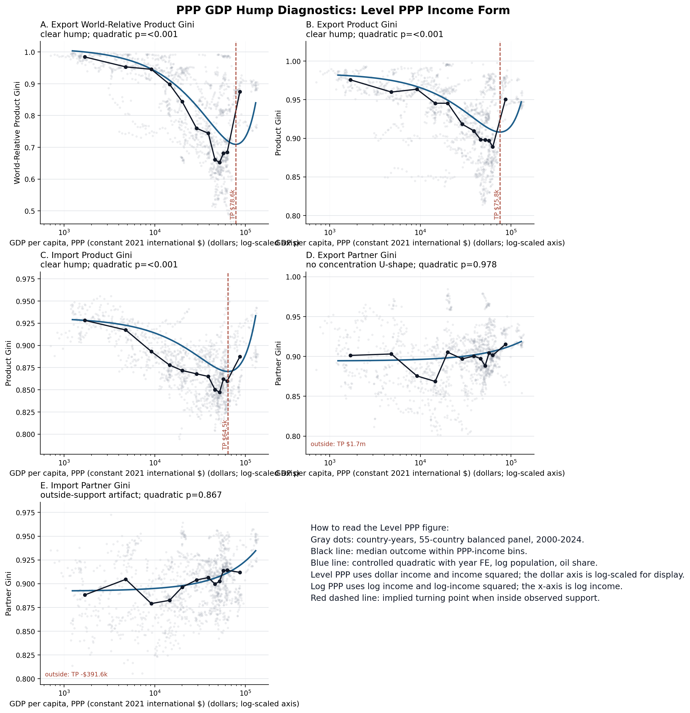
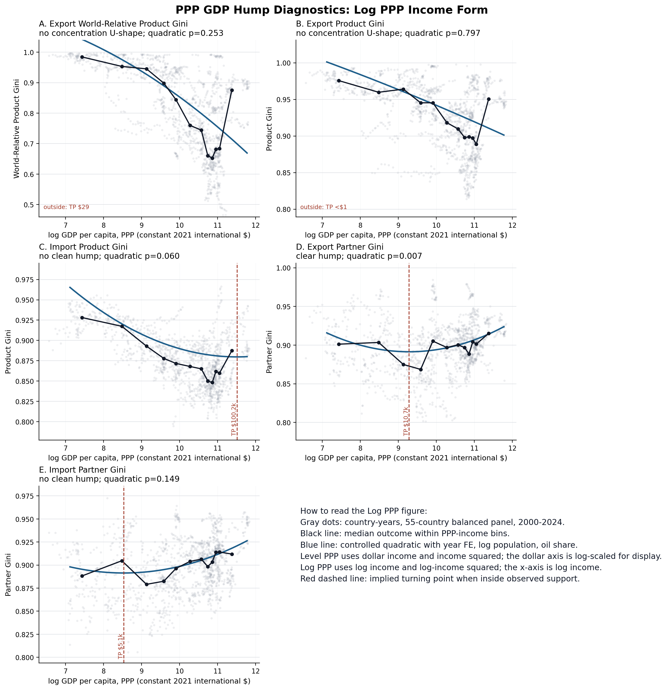
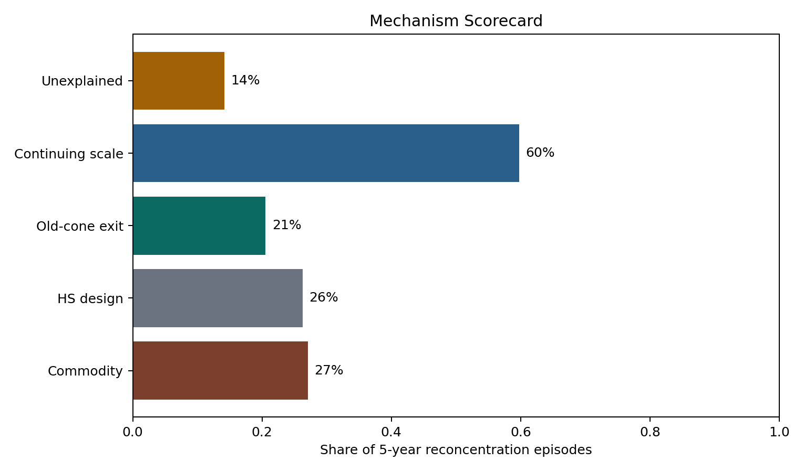
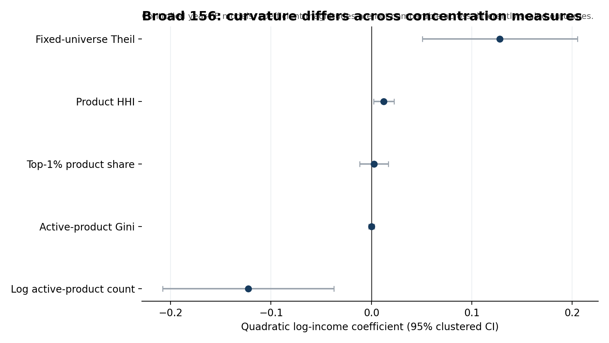
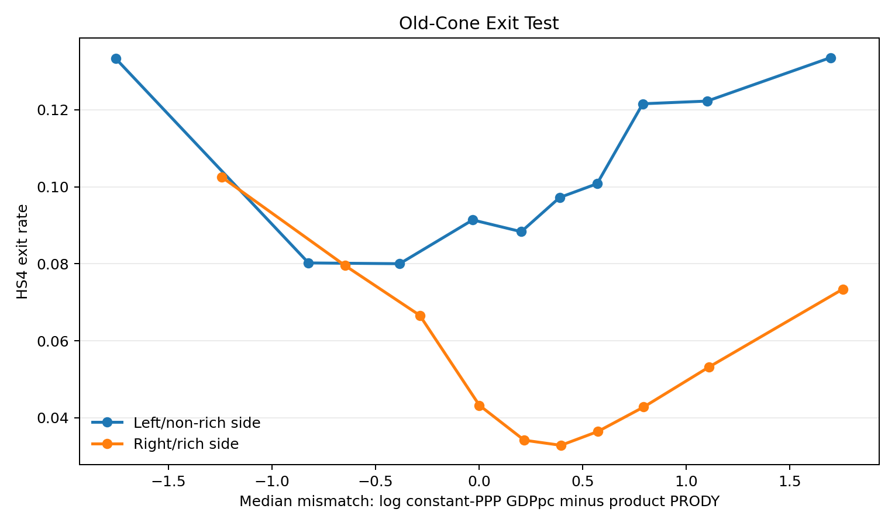

Cadot Hump Mechanism Tribunal
This page reports the Cadot-style hump results and mechanism diagnostics for the rd2 country panel. It separates what Cadot did, what this project did, and which results survive stricter checks.
What Cadot Did, What We Did
The table reports the objects being compared. Cadot's benchmark is export diversification over development using HS6 exports and PPP income; our checks use the modern rd2 panel and the project's product-concentration measures.
| Check | Sample | Income variable | Model | Result |
|---|---|---|---|---|
| Cadot, Carrere, Strauss-Kahn | 156 countries, 1988-2006, HS6 exports | Per-capita GDP at PPP, constant 2005 international dollars | Quadratic concentration-development curves; pooled OLS in the displayed benchmark | Export diversification rises then reconcentrates; concentration turning point around PPP $25k-$30k |
| Our original tribunal check | rd2 balanced panel, 55 countries, 2000-2024 | Current-dollar log GNI per capita | World-Relative Product Gini on log GNI and log GNI squared, controls, year FE, country-clustered SE | No clean hump: quadratic p-value 0.735; implied turning point outside support |
| Our PPP re-run | Same rd2 balanced panel, same 55 countries and years | World Bank constant PPP GDP per capita, NY.GDP.PCAP.PP.KD | Level PPP and log PPP quadratics, controls, year FE, country-clustered SE | Level PPP restores product concentration U-shapes; log PPP does not restore the export product hump |
Issue: Main issue is still pooled vs country FE. Pooled/year-FE compares countries at different development stages. Country FE asks whether the same country reconcentrates as it gets richer. The PPP hump weakens there, so do not overclaim.
PPP GDP Hump Results
All rows use rd2 countries, 2000-2024, log population, oil export share, year fixed effects, and reporter-country clustered standard errors. Product outcomes use the HS6 999999 exclusion rule; partner outcomes use the partner-total convention.
| Outcome | Income form | Quadratic coef. | p-value | Turning point | Inside p05-p95 | Verdict | N | Countries |
|---|---|---|---|---|---|---|---|---|
| Export World-Relative Product Gini | level_ppp | 0.005 | 0.000 | $78,574 | True | clear hump | 1,375 | 55 |
| Export World-Relative Product Gini | log_ppp | -0.007 | 0.253 | $29 | False | no concentration U-shape | 1,375 | 55 |
| Export Product Gini | level_ppp | 0.001 | 0.000 | $75,806 | True | clear hump | 1,375 | 55 |
| Export Product Gini | log_ppp | -0.000 | 0.797 | $0 | False | no concentration U-shape | 1,375 | 55 |
| Import Product Gini | level_ppp | 0.001 | 0.000 | $64,504 | True | clear hump | 1,375 | 55 |
| Import Product Gini | log_ppp | 0.004 | 0.060 | $100,182 | False | no clean hump | 1,375 | 55 |
| Export Partner Gini | level_ppp | -0.000 | 0.978 | $1.7M | False | no concentration U-shape | 1,375 | 55 |
| Export Partner Gini | log_ppp | 0.005 | 0.007 | $10,744 | True | clear hump | 1,375 | 55 |
| Import Partner Gini | level_ppp | 0.000 | 0.867 | $-391,592 | False | outside-support artifact | 1,375 | 55 |
| Import Partner Gini | log_ppp | 0.003 | 0.149 | $5,077 | True | no clean hump | 1,375 | 55 |
{kind=link}

{kind=link}

Pooled Versus Country-FE Robustness
The pooled/year-FE rows compare countries at different income levels within a year. The country/year-FE rows compare each country to itself over time.
| Outcome | Income form | Specification | Quadratic coef. | p-value | Turning point | Inside p05-p95 | N | Countries | Status |
|---|---|---|---|---|---|---|---|---|---|
| Export World-Relative Product Gini | level_ppp | pooled_year_fe | 0.005 | 0.000 | $78,574 | True | 1,375 | 55 | ok |
| Export World-Relative Product Gini | log_ppp | pooled_year_fe | -0.007 | 0.253 | $29 | False | 1,375 | 55 | ok |
| Export World-Relative Product Gini | level_ppp | country_year_fe | 0.002 | 0.007 | $88,450 | False | 1,375 | 55 | ok |
| Export World-Relative Product Gini | log_ppp | country_year_fe | 0.005 | 0.301 | $2.6M | False | 1,375 | 55 | ok |
| Export Product Gini | level_ppp | pooled_year_fe | 0.001 | 0.000 | $75,806 | True | 1,375 | 55 | ok |
| Export Product Gini | log_ppp | pooled_year_fe | -0.000 | 0.797 | $0 | False | 1,375 | 55 | ok |
| Export Product Gini | level_ppp | country_year_fe | 0.000 | 0.068 | $61,678 | True | 1,375 | 55 | ok |
| Export Product Gini | log_ppp | country_year_fe | 0.004 | 0.067 | $57,399 | True | 1,375 | 55 | ok |
| Import Product Gini | level_ppp | pooled_year_fe | 0.001 | 0.000 | $64,504 | True | 1,375 | 55 | ok |
| Import Product Gini | log_ppp | pooled_year_fe | 0.004 | 0.060 | $100,182 | False | 1,375 | 55 | ok |
| Import Product Gini | level_ppp | country_year_fe | 0.000 | 0.214 | $18,554 | True | 1,375 | 55 | ok |
| Import Product Gini | log_ppp | country_year_fe | 0.008 | 0.001 | $26,710 | True | 1,375 | 55 | ok |
| Export Partner Gini | level_ppp | pooled_year_fe | -0.000 | 0.978 | $1.7M | False | 1,375 | 55 | ok |
| Export Partner Gini | log_ppp | pooled_year_fe | 0.005 | 0.007 | $10,744 | True | 1,375 | 55 | ok |
| Export Partner Gini | level_ppp | country_year_fe | 0.000 | 0.824 | $-47,810 | False | 1,375 | 55 | ok |
| Export Partner Gini | log_ppp | country_year_fe | 0.003 | 0.437 | $12,145 | True | 1,375 | 55 | ok |
| Import Partner Gini | level_ppp | pooled_year_fe | 0.000 | 0.867 | $-391,592 | False | 1,375 | 55 | ok |
| Import Partner Gini | log_ppp | pooled_year_fe | 0.003 | 0.149 | $5,077 | True | 1,375 | 55 | ok |
| Import Partner Gini | level_ppp | country_year_fe | -0.000 | 0.356 | $88,670 | False | 1,375 | 55 | ok |
| Import Partner Gini | log_ppp | country_year_fe | -0.002 | 0.586 | $801,806 | False | 1,375 | 55 | ok |
Answer in One Screen
The balanced world-relative panel keeps 55 rd2 countries over 2000-2024. Using current-dollar GNI keeps the intended 55-country panel; constant-2015 GNI would reduce it to 40.
- The preferred World-Relative Product Gini quadratic does not deliver a clean within-sample Cadot-style turning point; the implied turning point is outside the observed income support.
- Among 472 five-year reconcentration episodes, the scorecard most often flags continuing-product scaling, then commodity and HS-design sensitivity.
- The old-cone test is positive but should be read cautiously: mismatch x rich-side coefficient is 0.010 with p-value 0.006.
- Cadot-style reconcentration is consistent with structural exit only if the old-cone tests pass; the page reports those tests but does not treat them as causal proof.

{kind=link}

{kind=link}

{kind=link}

Development Hump Specification
Country-year OLS with year fixed effects and country-clustered or two-way clustered SEs. The preferred table below uses current-dollar log GNI per capita, log population, and oil export share controls.
Descriptive hump model
| Term | Coefficient | SE | p-value | Implied turning point | N | Countries |
|---|---|---|---|---|---|---|
| log_gni_pc | -0.081 | 0.054 | 0.145 | $4751.42T | 1,375 | 55 |
| log_gni_pc_sq | 0.001 | 0.003 | 0.735 | $4751.42T | 1,375 | 55 |
| log_population | -0.044 | 0.006 | 0.000 | $4751.42T | 1,375 | 55 |
| oil_export_share | 0.077 | 0.052 | 0.148 | $4751.42T | 1,375 | 55 |
Sample Diagnostics
| Sample diagnostic | Required controls | Balanced countries | Rows | Rows after nonmissing controls |
|---|---|---|---|---|
| world_relative_only | none | 55 | 1,375 | 1,375 |
| current_gni_population_oil | log_gni_per_capita_current_usd,log_population,oil_export_share | 55 | 1,375 | 1,375 |
| constant_2015_gni_population_oil | log_gni_per_capita_constant_2015_usd,log_population,oil_export_share | 40 | 1,000 | 1,212 |
| main_current_gni_outcomes | log_gni_pc,log_population,oil_export_share,world_relative_product_gini | 55 | 1,375 | 1,375 |
Mechanism Scorecard
Each five-year reconcentration episode can receive multiple flags. This is a triage scorecard, not a horse-race regression.
| Mechanism flag | Reconcentration episodes | Flagged | Share |
|---|---|---|---|
| commodity_spike | 472 | 128 | 27.1% |
| section16_hs_design_sensitive | 472 | 124 | 26.3% |
| old_cone_pruning | 472 | 70 | 14.8% |
| continuing_product_superstar_scaling | 472 | 282 | 59.7% |
| broad_unexplained_reconcentration | 472 | 74 | 15.7% |
Largest Reconcentration Episodes
| Country | Base | Future | Delta World-Relative Gini | Commodity | HS design | Old cone | Continuing scale | Unexplained |
|---|---|---|---|---|---|---|---|---|
| Mexico | 2013 | 2018 | 0.133 | False | True | False | False | False |
| Mexico | 2012 | 2017 | 0.128 | False | True | False | False | False |
| Panama | 2017 | 2022 | 0.115 | False | False | False | False | True |
| Panama | 2016 | 2021 | 0.108 | False | False | False | False | True |
| Panama | 2018 | 2023 | 0.107 | False | False | False | False | True |
| Mexico | 2014 | 2019 | 0.106 | False | True | False | False | False |
| Mexico | 2015 | 2020 | 0.102 | False | True | False | True | False |
| Singapore | 2012 | 2017 | 0.096 | True | True | False | False | False |
| United Kingdom | 2008 | 2013 | 0.093 | False | False | False | True | False |
| Mexico | 2002 | 2007 | 0.082 | False | True | False | True | False |
| United Kingdom | 2004 | 2009 | 0.081 | False | False | True | True | False |
| New Zealand | 2013 | 2018 | 0.078 | False | False | False | False | True |
| New Zealand | 2014 | 2019 | 0.072 | False | False | False | False | True |
| New Zealand | 2015 | 2020 | 0.072 | False | False | False | False | True |
| New Zealand | 2016 | 2021 | 0.069 | False | False | False | False | True |
| United Kingdom | 2010 | 2015 | 0.063 | False | False | False | True | False |
| New Zealand | 2017 | 2022 | 0.063 | False | False | False | False | True |
| France | 2007 | 2012 | 0.061 | False | False | False | True | False |
| France | 2006 | 2011 | 0.059 | False | False | True | False | False |
| France | 2005 | 2010 | 0.057 | False | False | True | True | False |
Mechanical and Commodity Robustness
The same country-year sample is rerun using native HS6, Section 16 excluded, HS4, HS2, lumpy-commodity-excluded, and HS2-preserving residual variants.
| Robustness outcome | Quadratic coefficient | SE | p-value | Implied turning point | N |
|---|---|---|---|---|---|
| standard_hs6 | 0.001 | 0.001 | 0.410 | $30.4M | 1,375 |
| harmonized_world_relative_hs6_family | 0.001 | 0.003 | 0.735 | $4751.42T | 1,375 |
| native_hs6_excluding_section16 | 0.002 | 0.001 | 0.155 | $374,412 | 1,375 |
| native_hs4 | 0.002 | 0.001 | 0.187 | $1.2M | 1,375 |
| native_hs2 | 0.005 | 0.002 | 0.026 | $26,728 | 1,375 |
| hs6_lumpy_commodity_excluded | 0.001 | 0.001 | 0.287 | $3.8M | 1,375 |
| hs2_preserving_benchmark_residual | -0.005 | 0.002 | 0.010 | $26,706 | 1,375 |
Old-Cone Exit Test
HS4 products are assigned a leave-one-out rd2 PRODY-style sophistication score. Positive mismatch means the country is richer than the product's revealed exporter-income profile. The exit model includes country, HS4-product, and base-year fixed effects and clusters by country.
Exit test
| Exit model term | Coefficient | SE | p-value | N | Countries |
|---|---|---|---|---|---|
| mismatch_log_gni_minus_prody | 0.004 | 0.006 | 0.537 | 831,633 | 55 |
| rich_side_ct | -0.010 | 0.007 | 0.163 | 831,633 | 55 |
| mismatch_x_rich_side | 0.010 | 0.004 | 0.006 | 831,633 | 55 |
Mismatch by Product Status
| Rich side | HS4 status | Rows | Countries | Median mismatch | Median PRODY | Median country log GNI |
|---|---|---|---|---|---|---|
| 0 | continuing_product | 375,346 | 43 | -0.583 | 9.602 | 9.047 |
| 0 | dying_product | 35,136 | 43 | -0.992 | 9.579 | 8.575 |
| 0 | new_product | 36,460 | 43 | -1.399 | 9.566 | 8.216 |
| 1 | continuing_product | 403,659 | 25 | 1.004 | 9.711 | 10.694 |
| 1 | dying_product | 17,492 | 25 | 1.293 | 9.420 | 10.693 |
| 1 | new_product | 11,579 | 25 | 1.327 | 9.465 | 10.736 |
Latest-Year Country Context
| Country | Year | World-Relative Gini | Product Gini | Active products | Top 1% share | Lumpy share removed | Section 16 export share |
|---|---|---|---|---|---|---|---|
| Zimbabwe | 2024 | 0.991 | 0.989 | 1,335 | 93.4% | 41.4% | 0.6% |
| Burkina Faso | 2024 | 0.988 | 0.993 | 986 | 95.5% | 83.5% | 0.9% |
| Iceland | 2024 | 0.982 | 0.980 | 2,107 | 77.3% | 3.3% | 2.8% |
| Mozambique | 2024 | 0.981 | 0.989 | 1,693 | 90.5% | 60.5% | 0.4% |
| Uganda | 2024 | 0.968 | 0.979 | 2,636 | 81.1% | 44.7% | 1.0% |
| Guyana | 2024 | 0.956 | 0.998 | 1,944 | 98.4% | 89.0% | 0.9% |
| Cambodia | 2024 | 0.954 | 0.941 | 2,013 | 44.4% | 2.1% | 7.9% |
| Panama | 2024 | 0.953 | 0.946 | 1,859 | 65.2% | 7.2% | 2.1% |
| Peru | 2024 | 0.952 | 0.983 | 3,681 | 85.9% | 12.9% | 0.7% |
| Costa Rica | 2024 | 0.951 | 0.970 | 3,178 | 74.6% | 0.8% | 5.1% |
| Azerbaijan | 2024 | 0.948 | 0.994 | 1,964 | 94.8% | 85.4% | 0.4% |
| Niger | 2024 | 0.939 | 0.986 | 449 | 91.3% | 88.5% | 4.0% |
| Armenia | 2024 | 0.936 | 0.978 | 3,041 | 86.0% | 66.6% | 10.2% |
| North Macedonia | 2024 | 0.930 | 0.960 | 3,209 | 66.5% | 3.6% | 25.2% |
| New Zealand | 2024 | 0.926 | 0.960 | 4,335 | 71.0% | 3.8% | 5.9% |
| Kyrgyzstan | 2024 | 0.925 | 0.955 | 2,014 | 70.7% | 46.8% | 9.4% |
| Australia | 2024 | 0.920 | 0.979 | 4,879 | 86.1% | 30.9% | 2.9% |
| Morocco | 2024 | 0.917 | 0.970 | 3,551 | 72.1% | 6.1% | 21.0% |
| Senegal | 2024 | 0.917 | 0.973 | 2,089 | 76.3% | 47.8% | 1.8% |
| Ireland | 2024 | 0.906 | 0.977 | 4,705 | 83.3% | 3.8% | 10.6% |